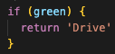

- An analogy to describe JavaScript and its relationship to HTML and CSS.
- The analogy of a b'day card resonated with me and I'd like to use this to describe JavaScript and its relationship to HTML and CSS. HTML is like the writing and pictures you see on a bday card- it's the content. CSS allows you to style this content and make it more aesthetically appealing. For example; instead of writing on a plain card, you can have a colourful card that makes it more pleasant. CSS is responsible for making plain HTML look pretty and more interesting! Sometimes you get interactive b'day cards that play a 'Happy Birthday' song, to other cards have things pop out when you open them up- this is where Javascript comes in. Javascript is responsible for interactive features such as animation or audio.
- Explain control flow and loops using an example process from everyday life.
-
Imagine you are driving a car. You drive when the traffic lights are
green, slow down and stop if you can when they are orange, and stop at
the lights when they are red. The traffic lights represent the concept
of control flow and loops in JS. Control statements are used to
control the flow of program (like the flow of traffic) based on the
specified condition. If statements, If else statements, if else if
statements, and switch statements are all types of JS control
statements. These conditions are known as Boolean conditions and they
may only be true or false. Lets start with an analogy of if
statements:
If the lights are green, then it is safe for you to drive. The condition here is that the lights must turn green in order for the result of driving the car to occur. In JS, the structure for capturing this is:
What happens if the lights are not green, and are orange instead? This is where if else statements come in:
So now we have a statement for green lights, a statement for orange lights, but nothing to tell drivers when to stop at the lights. This can cause issues in the flow of traffic systems. An if else is statement can be used to execute one block of statements from many depends upon the condition. For example:
Now we have code that allows us to conditionally execute behaviours for each colour of the traffic light system. Imagine we had a white light and a purple light added to the traffic light system. It would be quite lengthy to add them onto our code and this is where switch statements can be useful. Switch statements are more concise to work with when you have several groups of statements:
Imagine you have a bunch of fruits you need to need to sort through after a grocery shop. Each fruit type has a dedicated box and you need to place the fruit in its dedicated box. For example, bananas go in the banana box, apples in the apple box, and so on until you have sorted through all the fruits. This broadly captures the concept of a loop in JS. Loop control statements repeatedly execute a block of code in order to sort through items appropriately. Here is an example of a 'for' loop:
- Describe what the DOM is and an example of how you might interact with it.
-
From the first section of this blog post we know that; HTML provides
the structure and content, CSS allows you to style this content and
make it more aesthetically appealing, and JS is responsible for
interactive features such as animation or audio. The DOM stands for
Document Object Model and it allows you to see how HTML, CSS, and JS
are used to construct a document. The DOM provides means to interact
with objects in an HTML document.
In order to better understand the DOM, let's break down what the image below demonstrates:

The web browser is an application software that allows access to websites. It retrieves information from other parts of the web and displays it on your device (Eg: Firefox, Safari, Explorer, Chrome). It retrieves information from other parts of the web and displays it on your device (Eg: Firefox, Safari, Explorer, Chrome).A web page is a document that is displayed in a web browser or as an HTML source. A web page is also called document or document object. A web page can be accessed by entering URL into address bar of Browser. The document object deals with everything you see (and don't see) as a user- this is where we spent most of our time as users.
Every HTML element you use has a JS equivalent representation; this is object representation. Object representation allows you to access and modify html elements in JS. The DOM is a data representation of these objects and an application programming interface (API) for web documents.
The individual aspects of a document object are known as nodes. In other words, Node is an interface that makes up the DOM. The DOM consists of a hierarchy of nodes. Each node can have a parent and/or children. Every node is an object. Every HTML element is a node, but not every node an HTML element:
The DOM can be accessed in different ways. The first method to access the DOM is by ccessing tools on the right top corner of the page, the clicking 'more tools', and then clicking 'developer tools'. The scond way to access the DOM is by using the Control + Shift + i keys. The last metod is to simply use the F12 key when you are on the page you wish to inspect.
A DOM Event is a signal that something (an event) is occurring, or had occurred. Can be triggered by user interactions and/or the browser.DOM Events can record data, notify users and/or devs of the triggered event. Here is an example of a .addEventListener() method:
- Explain the difference between accessing data from arrays and objects.
-
Objects are used to represent a 'thing' in your code. The data inside
objects are known as Properties that consist of a key and a value. The
keys are iterable and can be accessed in any order. Objects are best
to use when the elements strings (text).
Arrays store data in an ordered collection in which the data can be accessed using a numerical index. The data inside an array is known as Elements. Numerical indexes are zero based which means the first item is stored at Oth index, second at first and so on, last item is stored at n-1th index. Arrays are best to use when the elements are numbers.
Standard practice is to use and array if you have to store the data in order or in a sequence, otherwise you can use object for everything else.
- Explain what functions are and why they are helpful.
-
JavaScript functions are used to perform operations. Functions are set
of instructions that describes actions that need to be taken. We can
call a function several times so it save coding, this is called code
reusability. It makes our program compact. We don't need to write many
lines of code each time to perform a task.
Here is an example of how to define and call a function using the traffic light system example from above. In the following image, the switch statement is nested within a function: